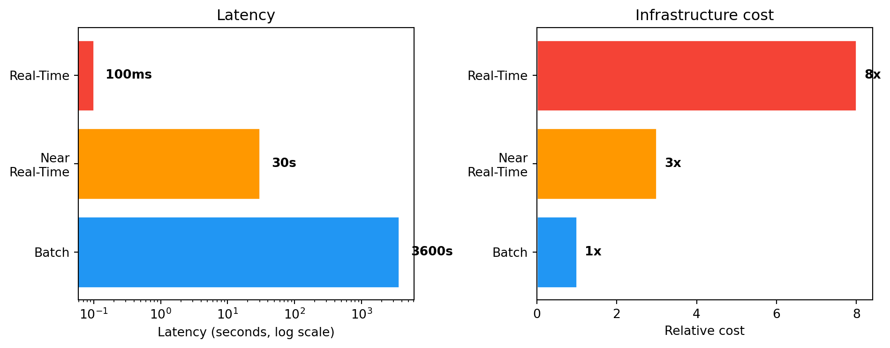

timeline
title From flat files to streaming
1960s-70s : Flat files
: Hierarchical databases
1970s-80s : Relational model (OLTP)
: SQL, ACID, CRUD
1990s : Data warehouses (OLAP)
: ETL, cubes, reports
2000s : Big Data
: Hadoop, MapReduce
2010s : Data Lake
: Schema-on-read, S3/HDFS
2020s : Streaming + Lakehouse
: Kafka, Spark, Flink
Lecture 1 — From Flat Files to Data Lake
Real-Time Data Analytics
Evolution of data processing models — from simple files, through relational databases and data warehouses, to Data Lake and stream processing.
1 Why do we need real-time data analytics?
Imagine you run an online store. At the end of the month you generate a sales report — and discover that two weeks ago an advertising campaign stopped working. You wasted two weeks of budget.
Now imagine seeing this within a minute of the conversion rate dropping. You react immediately — pause the campaign, change the creative, save the budget.
ImportantThe key difference
This is the difference between batch processing and real-time analytics.
Real-time data analytics is the process of processing data immediately (or nearly immediately) after it is generated — without waiting to collect it into a file or data warehouse.
1.1 Where does it matter?
| Industry | Example | Reaction time |
|---|---|---|
| Banking | Blocking a suspicious card transaction | Milliseconds |
| E-commerce | Personalizing an offer during a session | Seconds |
| Logistics | Rerouting a shipment after detecting a delay | Minutes |
| Telecom | Detecting a network failure before a customer reports it | Seconds |
| Healthcare | Alert from an ICU patient monitor | Milliseconds |
Not every problem requires millisecond reactions. The key question is: what reaction time does your business problem require?
2 Evolution of data processing models
2.1 Flat files — the starting point
Before databases existed, information was stored in text files — CSV, TSV, fixed-width column files. Each program read the file from beginning to end, processed the data, and wrote the result to a new file.
Show code
import pandas as pd
import numpy as np
np.random.seed(42)
transactions = pd.DataFrame({
'date': pd.date_range('2026-01-01', periods=100, freq='h'),
'amount': np.random.uniform(10, 5000, 100).round(2),
'store': np.random.choice(['Warsaw', 'Krakow', 'Gdansk'], 100)
})
# Typical batch analysis: load → process → save
monthly = transactions.groupby('store')['amount'].agg(['sum', 'mean', 'count'])
monthly.columns = ['total', 'average', 'count']
print(monthly.round(2)) total average count
store
Gdansk 76467.87 2317.21 33
Krakow 70304.46 2267.89 31
Warsaw 88847.85 2468.00 36This approach works well for small data. Problems arise when data grows, multiple users want to access it simultaneously, or we need consistency and security.
2.2 OLTP — relational databases
In the 1970s Edgar Codd proposed the relational model, which became the foundation of transactional systems. OLTP (On-Line Transaction Processing) is a model optimized for fast reads and writes of individual records.
TipOLTP characteristics
CRUD operations, ACID guarantees, short transactions. Used in ERP, CRM, banking, and e-commerce systems.
Show code
import sqlite3
conn = sqlite3.connect(':memory:')
cursor = conn.cursor()
cursor.execute('''
CREATE TABLE transactions (
id INTEGER PRIMARY KEY, date TEXT, amount REAL, store TEXT
)
''')
cursor.execute(
"INSERT INTO transactions (date, amount, store) VALUES (?, ?, ?)",
('2026-03-12 10:30:00', 299.99, 'Warsaw')
)
cursor.execute("SELECT * FROM transactions WHERE id = 1")
print(cursor.fetchone())
conn.close()(1, '2026-03-12 10:30:00', 299.99, 'Warsaw')OLTP handles day-to-day operations well. But the question “What was total sales by region over the last 12 months?” run against a production database can bring the system to a halt.
2.3 OLAP — data warehouses
The need for analytics led to OLAP (On-Line Analytical Processing) and data warehouses. Data from multiple OLTP systems is loaded through an ETL (Extract–Transform–Load) process, where it can be analyzed without affecting production systems.
TipOLAP characteristics
Multi-dimensional aggregations (time, location, product), historical data, reports and dashboards.
Show code
np.random.seed(42)
sales = pd.DataFrame({
'date': pd.date_range('2025-01-01', periods=365, freq='D'),
'amount': np.random.uniform(1000, 50000, 365).round(2),
'region': np.random.choice(['Mazovia', 'Lesser Poland', 'Pomerania'], 365),
'category': np.random.choice(['Electronics', 'Clothing', 'Food'], 365)
})
sales['quarter'] = sales['date'].dt.to_period('Q')
pivot = sales.pivot_table(values='amount', index='region', columns='quarter', aggfunc='sum')
print("Sales by region and quarter (thousands PLN):")
print((pivot / 1000).round(1))Sales by region and quarter (thousands PLN):
quarter 2025Q1 2025Q2 2025Q3 2025Q4
region
Lesser Poland 547.4 710.7 824.7 834.7
Mazovia 940.2 823.1 1098.7 615.1
Pomerania 685.6 654.7 646.8 774.62.4 Data Lake — everything in one place
A data warehouse requires data to have a structure before loading (schema-on-write). It can’t handle logs, images, JSON files from APIs, or IoT data.
Data Lake is the opposite approach — we store raw data in any format (schema-on-read) and give it structure only at analysis time.
| Feature | Value |
|---|---|
| Data structure | Structured |
| Schema | Before loading (schema-on-write) |
| Users | Business analysts |
| Storage cost | High |
| Technologies | SQL Server, Oracle, Teradata |
| Feature | Value |
|---|---|
| Data structure | Any (raw) |
| Schema | At read time (schema-on-read) |
| Users | Data scientists, engineers |
| Storage cost | Low |
| Technologies | Hadoop HDFS, S3, Azure Data Lake |
3 Data is always generated as a stream
All of the models above assume data is at rest — sitting in a file, database, or warehouse. But in reality, data is always generated as a stream of events — every transaction, every click, every sensor reading is an event that occurs at a specific moment in time.
WarningShift in perspective
Batch processing is just a simplification — we collect a stream of events into a file and analyze it with a delay.
Show code
import time
from datetime import datetime
def generate_transactions(n=5):
stores = ['Warsaw', 'Krakow', 'Gdansk']
for i in range(n):
yield {
'id': f'TX{i+1:04d}',
'time': datetime.now().strftime('%H:%M:%S'),
'amount': round(np.random.uniform(10, 2000), 2),
'store': np.random.choice(stores)
}
time.sleep(0.3)
total = 0
for tx in generate_transactions():
total += tx['amount']
alert = " << LARGE TRANSACTION" if tx['amount'] > 1500 else ""
print(f"[{tx['time']}] {tx['id']}: {tx['amount']:>8.2f} PLN ({tx['store']}){alert}")
print(f"\nRunning total: {total:.2f} PLN")[10:01:02] TX0001: 1001.75 PLN (Krakow)
[10:01:02] TX0002: 77.42 PLN (Warsaw)
[10:01:03] TX0003: 731.16 PLN (Gdansk)
[10:01:03] TX0004: 562.40 PLN (Krakow)
[10:01:03] TX0005: 36.06 PLN (Warsaw)
Running total: 2408.79 PLNSystems that handle data streams include: transactional systems, data warehouses, IoT systems, web analytics platforms, advertising platforms, social media, logging systems.
A company is an organization that generates and responds to a continuous stream of events.
4 Three processing modes — comparison
| Feature | Batch | Near Real-Time | Real-Time |
|---|---|---|---|
| Latency | Minutes–hours–days | Seconds–minutes | Milliseconds–seconds |
| Example | Monthly report | Sales dashboard (30s) | Card blocking |
| Cost | Low | Medium | High |
| Technologies | Pandas, Spark (batch), SQL | Kafka + Spark Streaming | Apache Flink, custom |
Show code
import matplotlib.pyplot as plt
import numpy as np
modes = ['Batch', 'Near\nReal-Time', 'Real-Time']
latency = [3600, 30, 0.1] # seconds
cost = [1, 3, 8] # relative
fig, (ax1, ax2) = plt.subplots(1, 2, figsize=(10, 4))
colors = ['#2196F3', '#FF9800', '#F44336']
ax1.barh(modes, latency, color=colors, edgecolor='white')
ax1.set_xscale('log')
ax1.set_xlabel('Latency (seconds, log scale)')
ax1.set_title('Latency')
for i, v in enumerate(latency):
label = f"{v}s" if v >= 1 else f"{int(v*1000)}ms"
ax1.text(v * 1.5, i, label, va='center', fontweight='bold')
ax2.barh(modes, cost, color=colors, edgecolor='white')
ax2.set_xlabel('Relative cost')
ax2.set_title('Infrastructure cost')
for i, v in enumerate(cost):
ax2.text(v + 0.2, i, f'{v}x', va='center', fontweight='bold')
plt.tight_layout()
plt.show()
TipThe golden rule
You don’t always need full real-time. In many cases near real-time is sufficient and significantly cheaper.
5 Data types — a brief overview
SQL tables, CSV files with a fixed column structure. The foundation of transactional systems.
JSON, XML. Flexible schema, dominant in APIs and NoSQL systems.
Show code
import json
order = {
"id": "ORD-2026-0042",
"customer": {"name": "Anna", "city": "Warsaw"},
"products": [
{"name": "Laptop", "price": 4299.00},
{"name": "Mouse", "price": 89.99}
],
"status": "shipped"
}
print(json.dumps(order, indent=2)){
"id": "ORD-2026-0042",
"customer": {
"name": "Anna",
"city": "Warsaw"
},
"products": [
{
"name": "Laptop",
"price": 4299.0
},
{
"name": "Mouse",
"price": 89.99
}
],
"status": "shipped"
}Text (emails, reviews), images, audio, video. Require NLP, computer vision, deep learning.
Events generated continuously. This is what we’ll work with throughout the rest of the course.
Big Data — five dimensions (5V)
- Volume — size (terabytes, petabytes)
- Velocity — rate of data arrival
- Variety — diversity of formats and sources
- Veracity — reliability and data quality
- Value — business value hidden in the data
CautionData warehouse ≠ Big Data
A data warehouse is not a Big Data system. A warehouse stores structured data and serves reporting (100% accuracy). A Big Data system handles data of any structure and tolerates some level of inaccuracy.
6 Summary
In this lecture we traced the evolution from flat files, through OLTP, OLAP and Data Lake, up to stream processing. Each model addresses different business needs — and none replaces the previous one. In practice, companies use them in parallel.
Note Next lecture
Architectures combining batch and streaming — Lambda and Kappa — and key concepts: event time, processing time, time windows.
Tip Food for thought
In what mode does your company (or a company you’d like to work for) process data? Are there processes that would benefit from moving to stream processing?